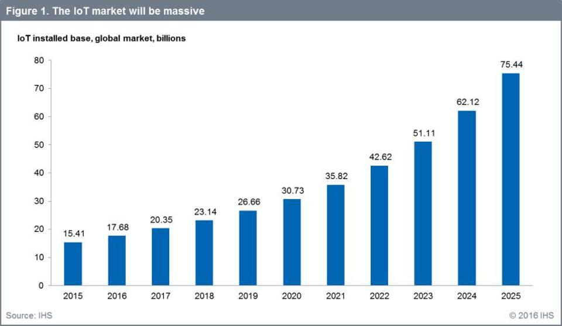

Flexible and scalable system
This is how fast Iot will grow

This is how fast the machine learning driven market will grow

How fast a parking lot will change 5 years from now?
It is undeniable that changes come at a faster speed than before. Flexibility and scale-ability are not optional anymore. Thanks to PubNub, the system has a clear modular design. For example, We decided to go with cheap sensors (HC-SR04). As time goes by and sensors get more powerful yet cheaper, we can add or replace sensors (or even controller boards) without modifying or stopping the server or the mobile client.
Python was used to code the server. It is not just a fast language but also a language of choice for statistic and machine learning. Server is then placed on a python cloud and is super scalable. By lifting a major processing power from the actual end-point and move it to the parking management servers, we allow faster updates to keep up with future changes.